12 Oct 2019
Author : Sirawit Pokha
7 ไอเดียถ่ายภาพสวยด้วยมือถือ เป็นไอเดียง่าย ๆ พร้อมทั้งเทคนิคในการสร้างความน่าสนใจใหม่ ๆ ให้กับภาพถ่าย จะเป็นเรื่องพื้นฐานและการวางองค์ประกอบเป็นหลัก สำหรับใครอยากรู้เรื่องพื้นฐานก็กลับไปอ่านได้นะครับ งั้นเดี๋ยวเรามาอ่านเรื่องไอเดียในการถ่ายภาพให้สวยด้วยมือถือกันดีกว่าครับ
การถ่ายภาพแบบ Long Exposure คือการให้กล้องเปิดรับแสงเป็นเวลานาน ซึ่งเป็นเทคนิคเดียวกับกล้อง Mirrorless กับ DSLR นั่นแหละ ซึ่งการถ่ายภาพด้วย Long Exposure นี้ก็จะทำให้เราสามารถที่จะรับแสงนานหลายวินาทีได้ แล้วการถ่ายภาพด้วย Long Exposure บนมือถือหรือ Smartphone มันช่วยอะไรได้ล่ะ
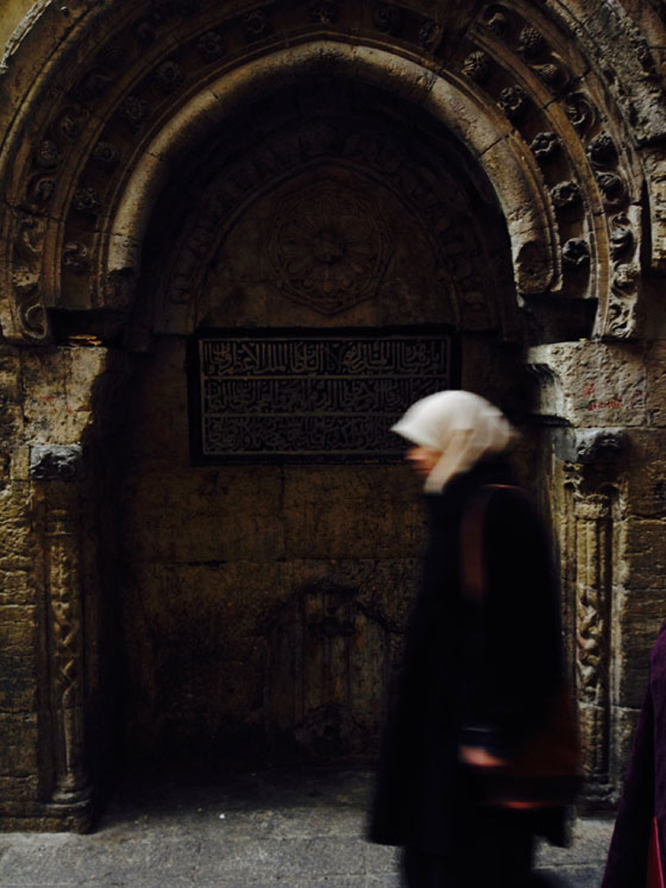อย่างแรกเลยคือเมื่อเปิดรับแสงนานขึ้น วัตถุที่เคลื่อนไหวมันก็จะเริ่มเบลอ เมื่อนำมาใช้กับแสงที่เคลื่อนที่อย่างถนนมันก็จะเห็นแสงไฟเป็นเส้น หรือแม้แต่การถ่ายภาพกลางคืน ที่แสงน้อยมาก ๆ ก็จะสามารถถ่ายได้สว่างขึ้น แม้แต่คนเดินผ่านไปมา หรือเลือกความเร็วชัตเตอร์ได้เหมาะสมมันก็จะทำให้คนที่เคลื่อนไหวอยู่ เบลอเป็นเอฟเฟคที่สวยและมีเรื่องราวได้
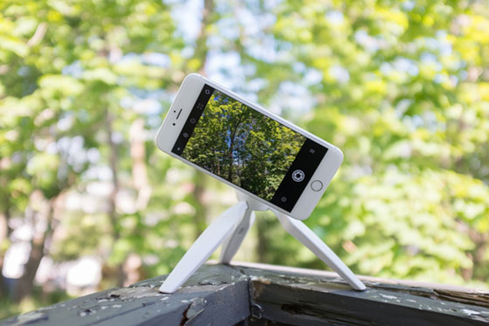เมื่อเราถ่ายภาพด้วยความเร็วชัตเตอร์ต่ำ จำเป็นอย่างยิ่งที่ขาดไม่ได้เลยคือ มือถือของเราต้องอยู่บนขาตั้งกล้องครับ เพื่อให้มือถือของเรานิ่งตลอดเวลาที่เปิดรับแสงนั่นเอง
กล้องมือถือในปัจจุบันนี้ต้องยอมรับว่ามันพัฒนามาไกลมากเหมือนกัน แล้วก็มีความสามารถที่จะถ่ายภาพในตอนกลางคืนได้ แม้ว่าเซ็นเซอร์มันจะเล็กก็จริงเมื่อเทียบกับกล้องดิจิตอลอย่าง Mirrorless หรือ DSLR แต่ว่ามันก็มีโหมดโปรต่าง ๆ ที่ทำให้มันเปิดรับแสงได้มากขึ้นเมื่อใช้โหมดเหล่านั้น
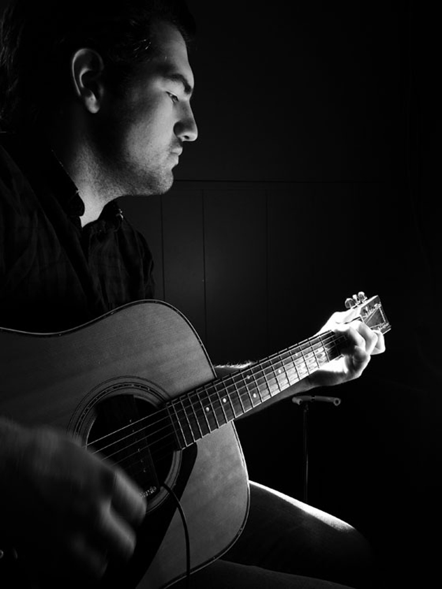เมื่อถ่ายภาพในที่มีแสงน้อย อย่างที่บอกกล้องจะต้องใช้ความเร็วชัตเตอร์ต่ำเพื่อให้รับแสงได้เพียงพอ ในระหว่างการรับแสงนั้นการเคลื่อนไหวเพียงเล็กน้อยของวัตถุมันก็จะเบลอเลย (เหมือนข้อแรกที่พูดเรื่อง Long Exposure) ดังนั้นวัตถุไหนที่เราไม่อยากให้เคลื่อนไหว มันก็ไม่ควรจะเคลื่อนไหวนะ
ไอเดียการถ่ายภาพให้สวยด้วยมือถือในเรื่องนี้ จะเหมาะสำหรับคนที่ชอบถ่ายภาพอะไรใกล้ ๆ หรือถ่ายพวกมาโคร เพราะจะทำให้เราเห็นรายละเอียดต่าง ๆ ของวัตถุได้เยอะขึ้น ซึ่งกรณีนี้จะต้องใช้ขาตั้งกล้องเหมือนกัน เพราะมันจะทำให้ลดอาการสั่นไหวของตัวกล้องมือถือเอง และนอกจากนี้เรามั่นใจได้เลยว่าเมื่อกล้องมือถือมันนิ่ง เราจะได้ภาพที่คมชัดแน่นอน
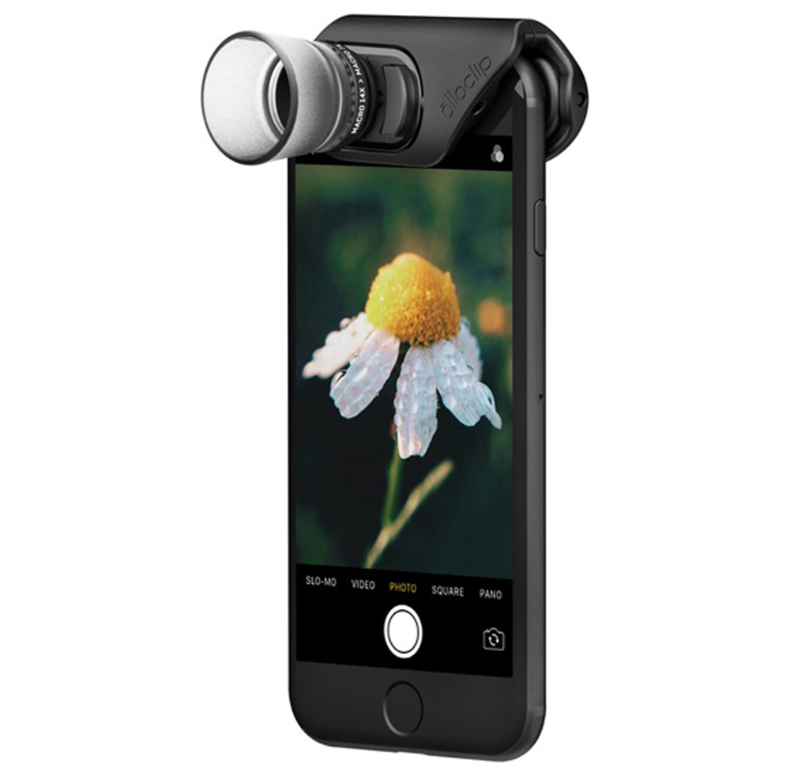มีเหตุผลสองประการที่จะใช้ขาตั้งกล้อง ข้อแรกก็คือเมื่อกี้แหละ เมื่อเราเคลื่อนไหวเพียงเล็กน้อยภาพก็เบลอได้เลยอยากให้ใช้ขาตั้งกล้องสำหรับมือถือ แต่อีกกรณีนึงก็คือ เวลาที่เราถ่ายภาพโคลสอัพ เราจำเป็นจะต้องอาศัยความนิ่งในการจัดระยะโฟกัส ทำให้ขาตั้งจำเป็นมาก แม้แต่กล้อง DSLR หรือ Mirrorless ก็ยังจำเป็นที่ต้องใช้ขาตั้งเมือนกัน ดังนั้นสิ่งนี้ขาดไม่ได้เลย
นอกจากนี้อุปกรณ์ที่จะต้องใช้ในการถ่ายภาพโคลสอัพแบบนี้เพิ่มเข้ามาก็คือพวกเลนส์ Macro สำหรับมือถือ มันก็มีหลายแบรนด์ในตลาดมาก ๆ อันนี้ก็แล้วแต่เราครับว่าเราจะใช้ยังไง แบรนด์ไหน
การถ่ายภาพในมุมต่ำมาก ๆ เราต้องวางกล้องไว้ที่พื้น หรืออาจจะต้องวางกับขาตั้งแล้วถ่ายเสยขึ้นมา มันทำให้ภาพของเราดูแปลกตามากขึ้น
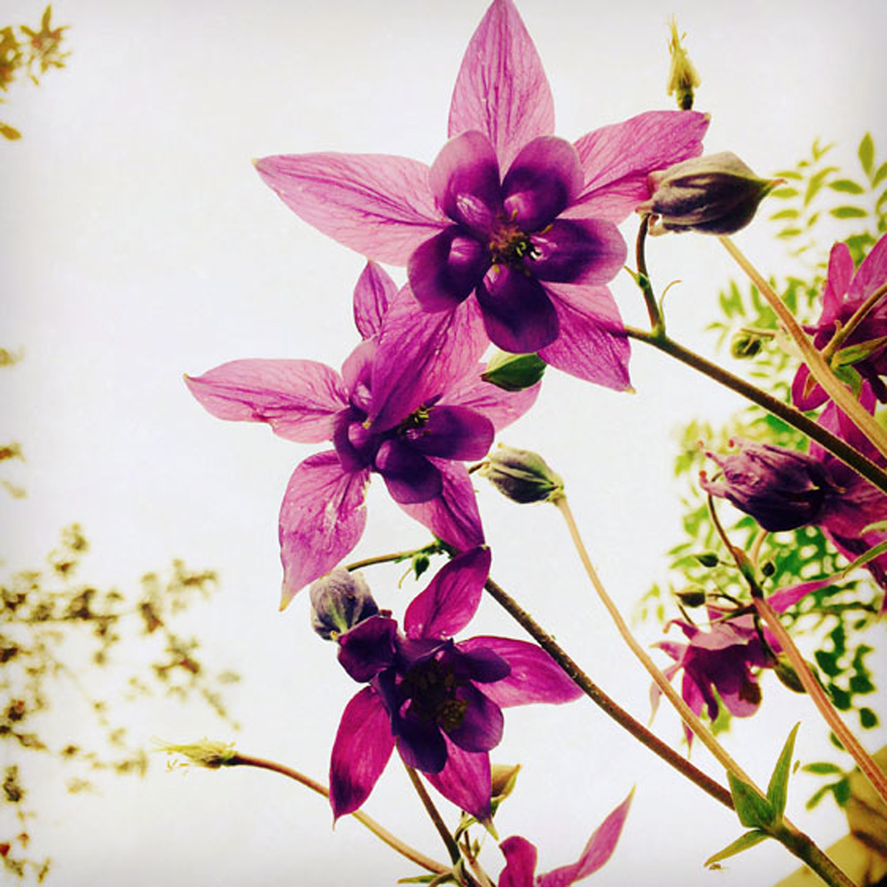อีกเทคนิคนึงคือถ่ายภาพจากมุมสูงลงมา คนไทยไม่ต้องพูดเยอะ เซียนด้านการถายภาพอาหารกันทั้งนั้น ส่วนใหญ่ก็จะใช้มุมสูงนี่แหละครับเป็นตัวสร้างจุดเด่นให้กับภาพถ่ายด้วยมือถือของเราให้สวยมากยิ่งขึ้น
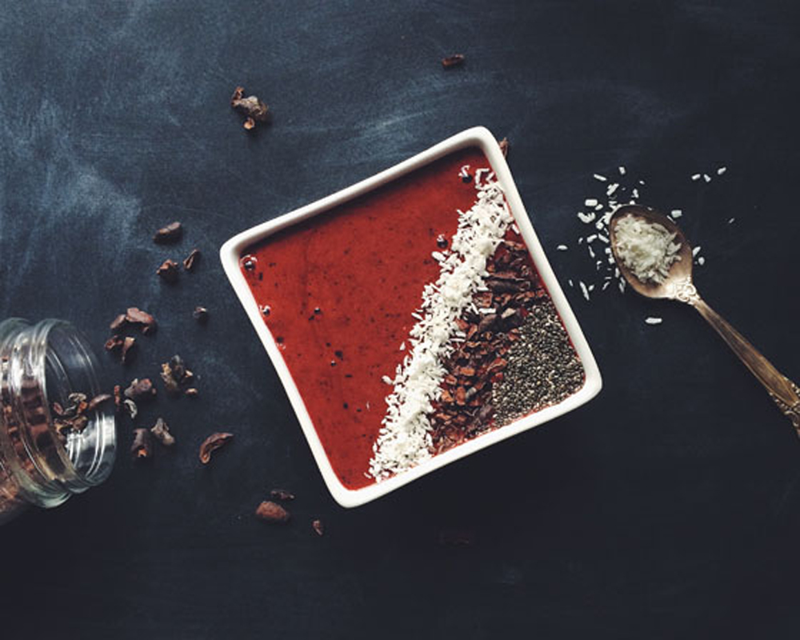สำหรับมือใหม่เรื่องการถ่ายภาพ Landscape จะรู้สึกว่า มันน่าจะยากนะ ภาพวิวไม่ใช่ว่าจะถ่ายสวยได้ง่าย ๆ ไรงี้ แถมมาถ่ายภาพ Landscape ด้วยกล้องมือถืออีก มันจะได้เหรอ
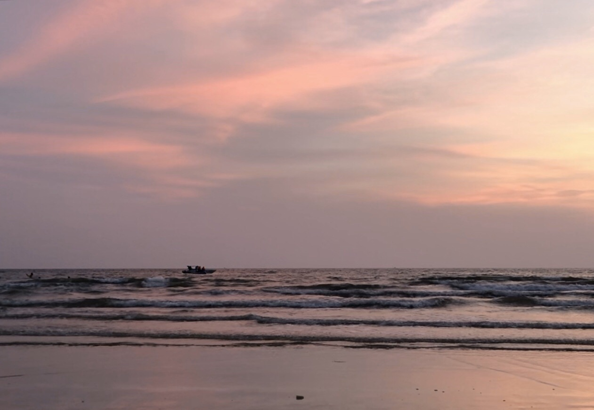อย่างแรกเลยคือ สำหรับแสงตอนกลางวันนะ กล้องมือถือเป็นกล้องที่ถ่ายภาพวิวได้สวยมาก เพราะแสงมันเพียงพอ แล้วระยะชัดกล้องมือถือเนี่ย สุด ๆ แถมการถ่ายภาพ Landscape ด้วยมือถือนั้นเราแค่ใช้พื้นฐานของการจัดองค์ประกอบภาพในการถ่ายภาพแค่นั้นเอง ภาพของเราก็สวยได้แล้ว
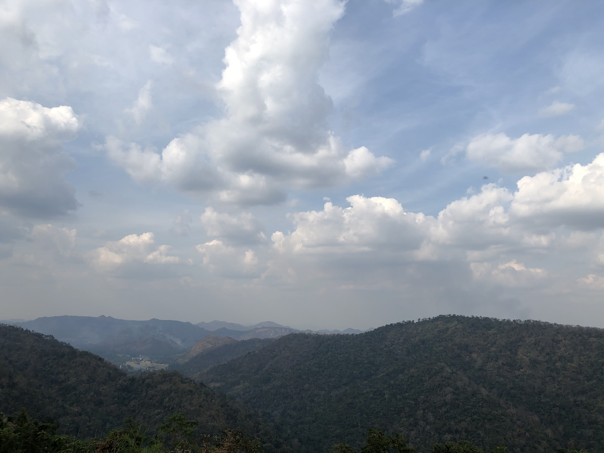การถ่ายภาพพวกสถาปัตยกรรมต่าง ๆ เป็นอีกไอเดียหนึ่งในการถ่ายภาพด้วยมือถือแล้วยังดูดีมาก ซึ่งถ้าหากเรามีโอกาสเจออาคารสวย ๆ ก็สามารถถ่ายออกมาได้ดีเหมือนกัน เพียงแต่บางโลเคชั่นที่มีพื้นที่แสงน้อย ๆ ยังไงก็ต้องใช้ขาตั้งช่วยนะครับ
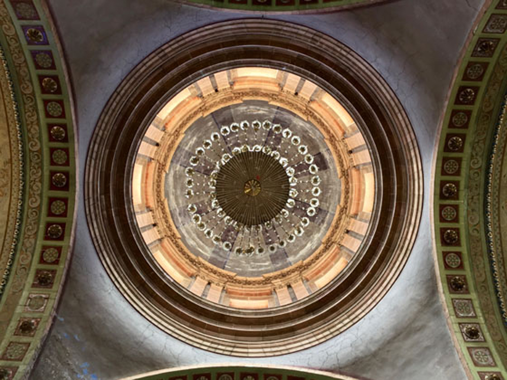การถ่ายแนวนี้เราสามารถสังเกตอะไรได้หลายจุดแล้วถ่ายภาพกลับมาได้เช่น เพดานสวย ๆ หรือว่าตึกต่าง ๆ ที่มีความสมมาตร มีเส้นสายที่สวย แน่นอนที่ขาดไม่ได้ “พื้นฐานการจัดองค์ประกอบภาพ” ยังไงก็ต้องใช้กับการถ่ายภาพแนวนี้ครับ
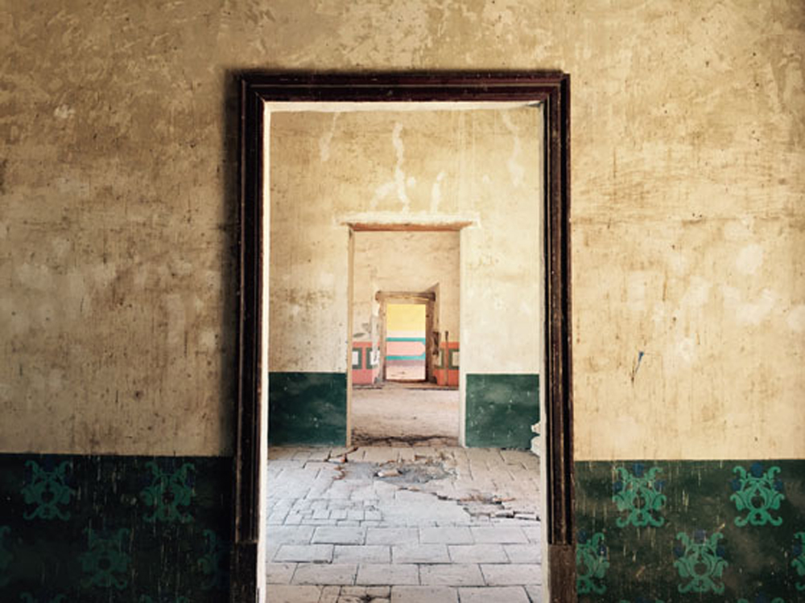การถ่ายภาพบุคคลเป็นอะไรที่นิยมทั้งกล้อง Smartphone และกล้อง Mirrorless หรือ DSLR เลยแหละ เพียงแต่ว่าการถ่ายด้วยมือถือมันอาจจะต้องมีลูกเล่นเยอะหน่อย เพราะการถ่ายภาพด้วยกล้องอย่าง Mirrorless หรือ DSLR ความสามารถในการละลายฉากหลังมันจะมีความสามารถที่ค่อนข้างโดดเด่น เพราะเรื่องขนาดเซ็นเซอร์และตัวเลนส์ที่มันมีหลากหลายกว่า
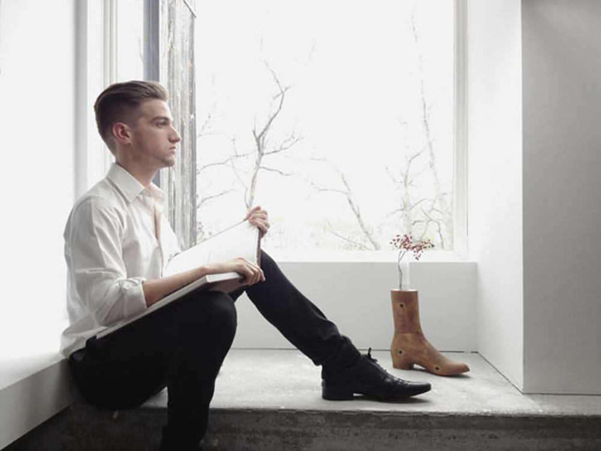แต่การถ่ายด้วยมือถือมันก็ทำได้เหมือนกันครับ อย่างแรกคือต้องเข้าใจ mindset นี้ก่อน การถ่ายภาพบุคคลให้สวย ไม่จำเป็นต้องละลายหลังเยอะ ๆ ก็ได้ครับ เพียงแต่การถ่ายภาพบุคคลมันก็ต้องมีเรื่องราว หรือการจัดมุมมอง ให้ดูลงตัวและน่าสนใจ ก็ทำให้ภาพดูสวยได้ อีกอย่างคือ เราสามารถใช้แอพพลิเคชั่นเพื่อสร้างเอฟเฟคที่คล้าย ๆ กับการใช้เลนส์ของกล้องตัวใหญ่ ๆ ได้ แม้อาจจะไม่เท่ากันแต่ว่าก็ยังทำออกมาได้ดีในระดับที่มันเป็นกล้องมือถือนั่นแหละ
อย่างการเซ็ตภาพถ่ายด้วยเรื่องราว ฉากหลังมีพร๊อบอย่างกีตาร์ และการแต่งตัวเข้ากับเนื้อเรื่อง โทนสีในภาพไปในทิศทางเดียวกันก็สามารถถ่ายออกมาได้น่าสนใจ
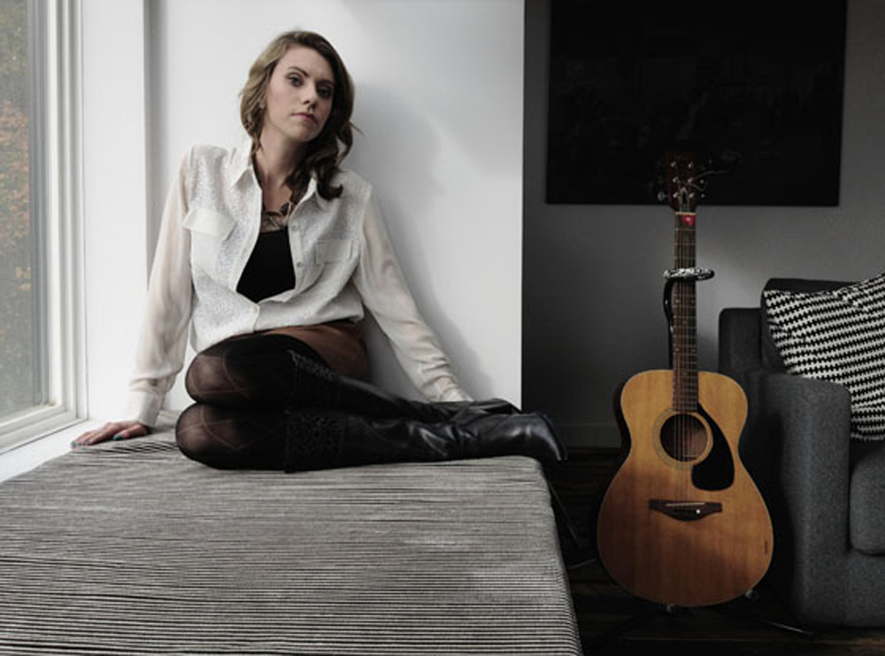